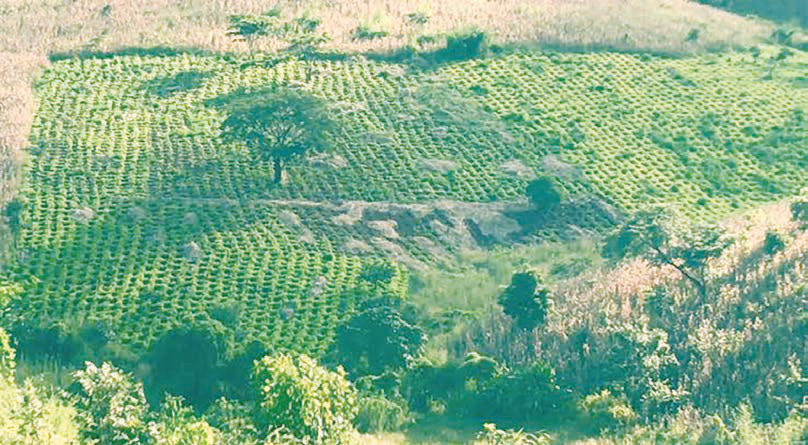

kisha kuzifunika nyasi hizo kwa udongo ili kutengeneza tuta. Mazao yalipandwa katika matuta. Sayansi na teknolojia hii ilisaidia kuzuia mmomonyoko wa udongo wakati wa mvua. Pia, maji yaliyokingwa katikati ya matuta yalitumika kuiweka ardhi katika hali ya unyevu kwa muda mrefu. Aina hii ya kilimo iliwezesha ardhi iliyopo maeneo ya milimani na miinuko kutumika kwa kilimo. Kielelezo namba 11, kinawasilisha kilimo cha ngoro.

Kielelezo namba 11: Kilimo cha ngoro
Chunguza na andika uwepo wa sayansi na teknolojia za asili zilizotumiwa katika kilimo katika maeneo yanayokuzunguka.
Maadili katika sayansi na teknolojia asilia katika kilimo
Maadili ilikuwa sehemu ya sayansi na teknolojia ya asili katika kilimo. Mfano, jamii zilifanya kilimo cha msimu na cha kuhamahama hasa maeneo yenye mvua chache. Maeneo yenye mvua kubwa na rutuba kama vile, kando kando ya milima, mito na kwenye mabonde kilifanyika kilimo cha kudumu. Watu